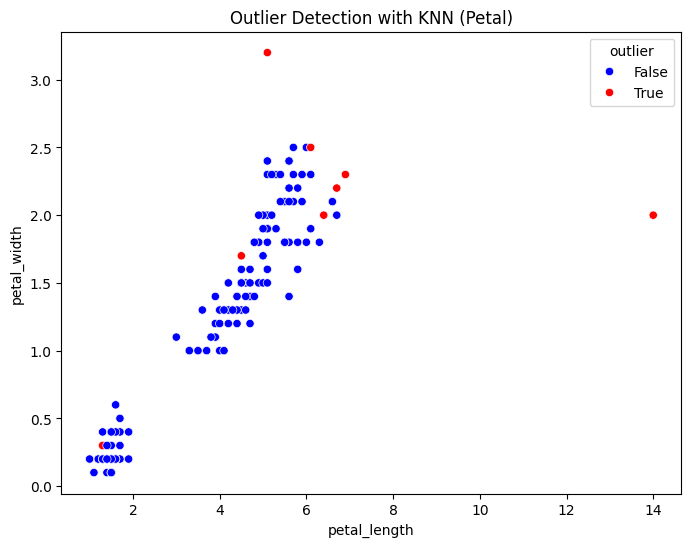
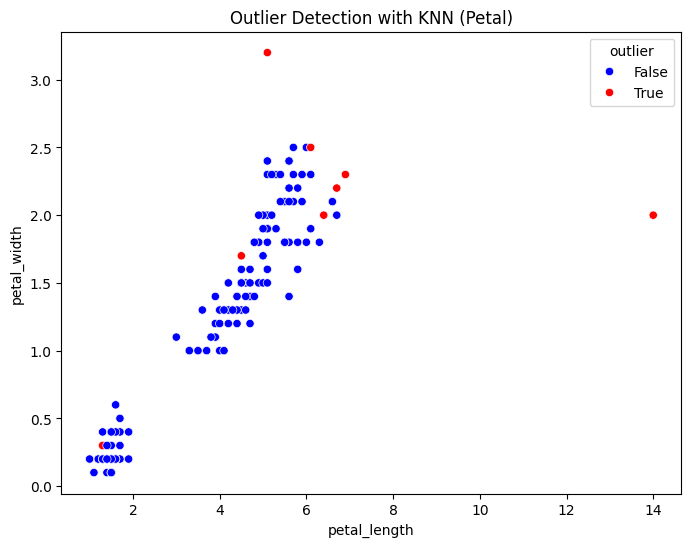

LOF#
APA ITU LOF?#
Algoritme Faktor Outlier Lokal (LOF) adalah metode deteksi anomali tanpa pengawasan yang menghitung deviasi kerapatan lokal dari titik data tertentu terhadap tetangganya. Algoritme ini menganggap sampel yang memiliki kerapatan jauh lebih rendah daripada tetangganya sebagai outlier. Contoh ini menunjukkan cara menggunakan LOF untuk deteksi outlier yang merupakan kasus penggunaan default dari estimator ini di scikit-learn.
BAGAIMANA TAHAPAN LOF?#
Tentukan K-Tetangga Terdekat (k-nearest neighbors) Setiap titik data dihitung jaraknya ke sejumlah tetangga terdekatnya (misalnya 5 atau 10 tetangga).
Hitung Reachability Distance Jarak yang dibutuhkan untuk mencapai tetangga terdekat dihitung untuk semua titik data.
Hitung Kepadatan Lokal (Local Density) Kepadatan dihitung berdasarkan jarak ke tetangga sekitar. \(\text{LRD}(A) = \frac{1}{\frac{1}{k} \sum_{B \in N_k(A)} d_{\text{reach}}(A, B)} \)
Hitung Local Outlier Factor (LOF Score)
LOF Score menunjukkan seberapa jauh kepadatan suatu titik dibandingkan dengan tetangganya.
Jika LOF Score mendekati 1, titik tersebut dianggap normal.
Jika LOF Score lebih besar dari 1, kemungkinan titik tersebut adalah outlier.
\(\text{LOF}_k(A) = \frac{\sum_{B \in N_k(A)} \frac{\text{LRD}_k(B)}{\text{LRD}_k(A)}}{|N_k(A)|} \)
CONTOH MENGHITUNG MANUAL LOF#
Misalkan kita punya 4 titik data dalam 2 dimensi:
![image.png]()
Kita akan menghitung LOF untuk titik D menggunakan k = 2 (2-nearest neighbors).
Rumus jarak Euclidean antara dua titik \(\left(x_1, y_1\right)\) dan \(\left(x_2, y_2\right)\) : \( d(A, B)=\sqrt{\left(x_2-x_1\right)^2+\left(y_2-y_1\right)^2} \)
Mari kita hitung jarak D ke semua titik lain: \( \begin{aligned} & d(D, A)=\sqrt{(20-2)^2+(20-3)^2}=\sqrt{324+289}=\sqrt{613} \approx 24.74 \\ & d(D, B)=\sqrt{(20-3)^2+(20-5)^2}=\sqrt{289+225}=\sqrt{514} \approx 22.71 \\ & d(D, C)=\sqrt{(20-4)^2+(20-4)^2}=\sqrt{256+256}=\sqrt{512} \approx 22.63 \end{aligned} \)
Jadi, 2 tetangga terdekat titik D adalah C dan B.
Reachability Distance dihitung sebagai: \( \operatorname{reach}-\operatorname{dist}(D, C)=\max (\mathrm{k} \text {-distance }(C), d(D, C)) \)
Misalkan k-distance untuk C adalah jarak ke tetangga terdekatnya, yaitu: \( \mathrm{k} \text {-distance }(C)=d(C, B)=\sqrt{(4-3)^2+(4-5)^2}=\sqrt{1+1}=\sqrt{2} \approx 1.41 \)
Maka: \( \operatorname{reach}-\operatorname{dist}(D, C)=\max (1.41,22.63)=22.63 \)
Begitu juga: \( \operatorname{reach}-\operatorname{dist}(D, B)=\max (2.24,22.71)=22.71 \)
LRD dihitung dengan: \( \begin{aligned} & \operatorname{LRD}(D)=\frac{k}{\sum_{i=1}^k \operatorname{reach-dist}(D, i) / k} \\ & \operatorname{LRD}(D)=\frac{2}{\left(\frac{22.63+22.11}{2}\right)} \\ & \end{aligned}=\frac{2}{22.67} \approx 0.088 \quad 1 . \)
LOF dihitung dengan: \( \operatorname{LOF}(D)=\frac{\sum_{i=1}^k \operatorname{LRD}(i) / k}{\operatorname{LRD}(D)} \)
Misalkan LRD untuk titik C dan B adalah: \( \operatorname{LRD}(C)=0.50, \quad \operatorname{LRD}(B)=0.52 \)
Maka: \( \begin{aligned} \operatorname{LOF}(D) & =\frac{(0.50+0.52) / 2}{0.088} \\ = & \frac{0.51}{0.088} \approx 5.8 \end{aligned} \)
Jika LOF ≈ 1, berarti titik tersebut normal. Jika LOF > 1, berarti titik tersebut outlier. LOF(D) ≈ 5.8, artinya titik D adalah outlier!
Implementasi menggunakan Sklearn#
Install library(pustaka)#
psycopg2: Digunakan untuk menghubungkan Python dengan PostgreSQL.
pymysql: Digunakan untuk menghubungkan Python dengan MySQL.
%pip install pymysql
%pip install psycopg2
Requirement already satisfied: pymysql in /usr/local/python/3.12.1/lib/python3.12/site-packages (1.1.1)
Note: you may need to restart the kernel to use updated packages.
Requirement already satisfied: psycopg2 in /usr/local/python/3.12.1/lib/python3.12/site-packages (2.9.10)
Note: you may need to restart the kernel to use updated packages.
Koneksi dan Analisis#
Menghubungkan Database
Menggunakan psycopg2 untuk PostgreSQL atau pymysql untuk MySQL.
Mengambil & Mengolah Data
Menggunakan pandas untuk membaca data dari database atau file. Menggunakan numpy untuk perhitungan matematis.
Visualisasi Data
Menggunakan seaborn dan matplotlib untuk membuat grafik.
Mendeteksi Outlier dengan LOF
Menggunakan jarak Euclidean untuk menentukan kedekatan antar titik. Menggunakan NearestNeighbors untuk mencari tetangga terdekat. Menghitung Local Outlier Factor (LOF) untuk mendeteksi titik outlier.
import psycopg2
import pymysql
import numpy as np
import pandas as pd
import seaborn as sns
import matplotlib.pyplot as plt
from scipy.spatial.distance import euclidean
from sklearn.neighbors import NearestNeighbors
Koneksi ke Database PostgreSQL#
Menggunakan psycopg2.connect() untuk membuat koneksi ke database PostgreSQL.
Parameter koneksi:
host → Alamat server database.
user → Nama pengguna database.
password → Kata sandi database.
database → Nama database yang akan diakses.
port → Port yang digunakan untuk koneksi PostgreSQL (10845).
def get_pg_data():
conn = psycopg2.connect(
host="pg-1b2607ab-mysqlmalik.g.aivencloud.com",
user="avnadmin",
password="AVNS_vrtLmaekbIjPLe1BVzC",
database="defaultdb",
port=10845
)
cursor = conn.cursor()
cursor.execute("SELECT * FROM sepal_postgresql")
data = cursor.fetchall()
columns = [desc[0] for desc in cursor.description] # Ambil nama kolom
cursor.close()
conn.close()
return pd.DataFrame(data, columns=columns)
Koneksi ke Database MySQL#
Menggunakan pymysql.connect() untuk membuat koneksi ke database MySQL.
Parameter koneksi:
host → Alamat server database.
user → Nama pengguna database.
password → Kata sandi database.
database → Nama database yang akan diakses.
port → Port koneksi MySQL (10845).
def get_mysql_data():
conn = pymysql.connect(
host="mysql-36e0c60-mysqlmalik.g.aivencloud.com",
user="avnadmin",
password="AVNS_nDXL4gOogFn3sSgwrBm",
database="defaultdb",
port=10845
)
cursor = conn.cursor()
cursor.execute("SELECT * FROM petalmysql")
data = cursor.fetchall()
columns = [desc[0] for desc in cursor.description] # Ambil nama kolom
cursor.close()
conn.close()
return pd.DataFrame(data, columns=columns)
import pandas as pd
import numpy as np
import seaborn as sns
import matplotlib.pyplot as plt
from sklearn.neighbors import NearestNeighbors
# Ambil data dari kedua database
df_postgresql = get_pg_data()
df_mysql = get_mysql_data()
# Gabungkan berdasarkan kolom 'id' dan 'Class'
df_merged = pd.merge(df_mysql, df_postgresql, on=["id", "class"], how="inner")
# Ambil data fitur numerik
feature_columns = ["petal_length", "petal_width", "sepal_length", "sepal_width"]
data_values = df_merged[feature_columns].values
# Gunakan KNN untuk mendeteksi outlier
K = 5 # Jumlah tetangga terdekat
nbrs = NearestNeighbors(n_neighbors=K+1, metric='euclidean').fit(data_values)
distances, indices = nbrs.kneighbors(data_values)
# Ambil rata-rata jarak ke K tetangga terdekat (tidak termasuk jarak ke dirinya sendiri)
df_merged["knn_distance"] = np.mean(distances[:, 1:], axis=1)
# Tentukan threshold outlier berdasarkan persentil ke-95
threshold = np.percentile(df_merged["knn_distance"], 95)
df_merged["outlier"] = df_merged["knn_distance"] > threshold
# Cetak 10 data dari Sepal
print("10 Data Sepal:")
print(df_merged[["id", "class", "sepal_length", "sepal_width", "outlier"]].head(10).to_string(index=False))
# Cetak 10 data dari Petal
print("\n10 Data Petal:")
print(df_merged[["id", "class", "petal_length", "petal_width", "outlier"]].head(10).to_string(index=False))
# Visualisasi scatter plot Sepal
plt.figure(figsize=(8, 6))
sns.scatterplot(
x=df_merged["sepal_length"], y=df_merged["sepal_width"],
hue=df_merged["outlier"], palette={False: "blue", True: "red"}
)
plt.title("Outlier Detection with KNN (Sepal)")
plt.show()
# Visualisasi scatter plot Petal
plt.figure(figsize=(8, 6))
sns.scatterplot(
x=df_merged["petal_length"], y=df_merged["petal_width"],
hue=df_merged["outlier"], palette={False: "blue", True: "red"}
)
plt.title("Outlier Detection with KNN (Petal)")
plt.show()
10 Data Sepal:
id class sepal_length sepal_width outlier
1 Iris-setosa 5.1 3.5 False
2 Iris-setosa 40.9 30.0 True
3 Iris-setosa 4.7 3.2 False
4 Iris-setosa 4.6 3.1 False
5 Iris-setosa 5.0 3.6 False
6 Iris-setosa 5.4 3.9 False
7 Iris-setosa 4.6 3.4 False
8 Iris-setosa 5.0 3.4 False
9 Iris-setosa 4.4 2.9 False
10 Iris-setosa 4.9 3.1 False
10 Data Petal:
id class petal_length petal_width outlier
1 Iris-setosa 1.4 0.2 False
2 Iris-setosa 14.0 2.0 True
3 Iris-setosa 1.3 0.2 False
4 Iris-setosa 1.5 0.2 False
5 Iris-setosa 1.4 0.2 False
6 Iris-setosa 1.7 0.4 False
7 Iris-setosa 1.4 0.3 False
8 Iris-setosa 1.5 0.2 False
9 Iris-setosa 1.4 0.2 False
10 Iris-setosa 1.5 0.1 False
 

Menggunakan dataset Iris dari scikit-learn#
from sklearn.datasets import load_iris
import pandas as pd
# Load dataset
iris = load_iris()
# Buat DataFrame
df = pd.DataFrame(iris.data, columns=iris.feature_names)
# Ganti nama kolom agar sesuai dengan yang diminta
df.columns = ['sepal_length', 'sepal_width', 'petal_length', 'petal_width']
# Ambil hanya kolom yang diperlukan
X = df[['petal_length', 'petal_width', 'sepal_length', 'sepal_width']]
print(X.head()) # Cek hasil
petal_length petal_width sepal_length sepal_width
0 1.4 0.2 5.1 3.5
1 1.4 0.2 4.9 3.0
2 1.3 0.2 4.7 3.2
3 1.5 0.2 4.6 3.1
4 1.4 0.2 5.0 3.6
Mendeteksi outlier dalam dataset Iris.#
import numpy as np
import pandas as pd
from sklearn.datasets import load_iris
from sklearn.neighbors import LocalOutlierFactor
# Load dataset
iris = load_iris()
df = pd.DataFrame(iris.data, columns=iris.feature_names)
# Ganti nama kolom agar sesuai dengan permintaan
df.columns = ['sepal_length', 'sepal_width', 'petal_length', 'petal_width']
# Pastikan df_merged didefinisikan (jika memang perlu merging, lakukan di sini)
df_merged = df # Jika tidak ada proses merge, gunakan df langsung
# Ambil fitur yang diminta
x = df_merged[['petal_length', 'petal_width', 'sepal_length', 'sepal_width']]
# Inisialisasi model Local Outlier Factor
clf = LocalOutlierFactor(n_neighbors=5)
# Prediksi anomali/outlier
y_pred = clf.fit_predict(x)
# Cetak hasil prediksi
print(y_pred)
[ 1 1 1 1 1 1 1 1 1 1 1 1 1 1 1 1 1 1 1 1 1 1 -1 1
-1 1 1 1 1 1 1 1 1 1 1 1 1 1 1 1 1 -1 1 1 1 1 1 1
1 1 1 1 1 1 1 1 1 1 1 1 1 1 -1 1 1 1 1 1 1 1 1 1
1 1 1 1 1 1 1 1 1 1 1 1 1 1 1 1 1 1 1 1 1 1 1 1
1 1 1 1 1 1 1 1 1 1 -1 1 1 -1 1 1 1 1 1 1 1 1 1 1
1 1 1 1 1 1 1 1 1 1 1 1 1 1 1 1 1 1 1 1 1 1 1 1
1 1 1 1 1 1]
memuat dataset Iris, mengonversinya menjadi DataFrame pandas, dan menampilkan bentuk serta isinya.#
from sklearn.datasets import load_iris
import pandas as pd
# Load dataset
iris = load_iris()
# Buat DataFrame
df = pd.DataFrame(iris.data, columns=iris.feature_names)
# Ganti nama kolom agar sesuai dengan yang diminta
df.columns = ['sepal_length', 'sepal_width', 'petal_length', 'petal_width']
# Ambil semua data
X = df[['petal_length', 'petal_width', 'sepal_length', 'sepal_width']]
# Cek jumlah data
print(X.shape) # Output: (150, 4)
print(X)
(150, 4)
petal_length petal_width sepal_length sepal_width
0 1.4 0.2 5.1 3.5
1 1.4 0.2 4.9 3.0
2 1.3 0.2 4.7 3.2
3 1.5 0.2 4.6 3.1
4 1.4 0.2 5.0 3.6
.. ... ... ... ...
145 5.2 2.3 6.7 3.0
146 5.0 1.9 6.3 2.5
147 5.2 2.0 6.5 3.0
148 5.4 2.3 6.2 3.4
149 5.1 1.8 5.9 3.0
[150 rows x 4 columns]